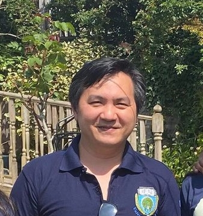

|  |
Aung K. Moe (A K Moe)
|
A Senior Systems Engineer with strong skills in Finance, E-Commerce and Gaming environments running on a range of platforms including Linux, Windows, Virtualisation and cloud platform. Specialising in Linux OS & Microsoft Azure Cloud. Managing networks on-premises and cloud across multiple branches and Data Centres securely.
Experience working in a structured environment, with exposure to the full project lifecycle from conception to implementation. Optimising costs and performance, Designing secure network/resources, maintaining High Availability and reliability across multiple sites. I am also involved in fulfilling compliances such as PCI/DSS, FCA, SOX, GDPR, etc. for high traffic sites.
| Cloud & Virtualisation | Azure Cloud, AWS, Citrix Xenserver, VMware, Proxmox | |||||||||||
| Operating Systems | Linux (Ubuntu, Redhat, Scientific Linux), Windows (Server 2019/2016) | |||||||||||
| Security/Audit | Nexpose, Nessus Security Manager, Firemon | |||||||||||
| Automation/Programming | ||||||||||||
|
| 2020 June | Certified Azure Solutions Architect (AZ300 & AZ301) |
| 2019 April | Certified Azure Administrator (AZ-100) |
| 2016 April | Citrix Xenserver Administrator |
| 2012 January | Tenable Certified Nessus Auditor |
| 2008 August | LPI Level 2 Certified |
| 2002-2006 | 1st Class Honours BSc. Computer Science (Computer Communication & Networks) |
| January 2021 - Present |
Senior Systems Engineer ALGORITHMIC STRATEGIES (UK) LTD (Voleon UK) |
| August 2014 – November 2020 |
Senior Infrastructure Specialist Elevate Credit International Limited |
| January 2014 – July 2014 |
Application Integration Engineer Rank Group |
| July 2013 – October 2013 |
Web Systems Engineer TSL Education |
| November 2010 – March 2013 |
Senior Systems Engineer Wiggle Ltd |
| Aug 2006 – October 2010 |
Senior Systems Engineer I Want One Of Those.Com Ltd |
June 1996 – June 2000 |
Senior Service Engineer ACE Data Systems |